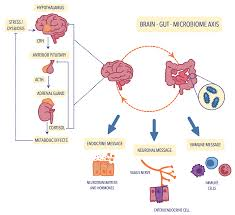
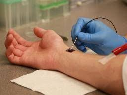
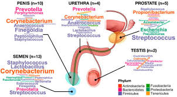
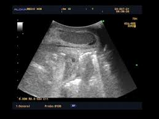
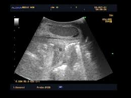
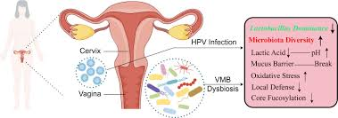
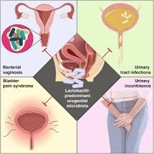
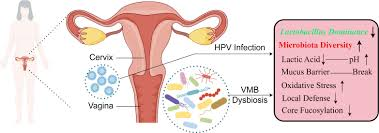
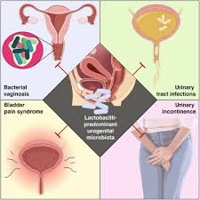

Exposition Microbiote à la Cité des Sciences
Publié DECEMBRE 2024 - Par Nourredine, photos OPEN
SOURCE
Un voyage fascinant dans nos entrailles
Une exposition à la Cité des sciences de la Villette retrace,
d’après le texte et les dessins du «Charme discret de
l’intestin», le trajet sinueux des aliments à travers nos
entrailles. Un périple chaotique et drolatique au fabuleux pays
des bactéries.



Photo Marguerite Bornhauser
Et voilà comment on s'est fait avaler par une grande bouche,
baignée de salive (en fait du sang filtré) avant de ressortir
des heures plus tard comme une… merde. Mais une merde ébahie par
la fantastique mécanique de notre système digestif...
L'aventure dans notre estomac et intestins
Après la bouche, on a emprunté cette berline de luxe qu'est
l'œsophage, que l'on a descendu avec grâce (sans nous vanter) au
gré des contractions bien orchestrées (mouvement péristaltique)
de cet organe...
La route ensuite s'est faite longuette. Intestin grêle : 5,50
mètres à parcourir. Oui mais caressée par des villosités douces
comme du velours. Arrivée dans le côlon : plus qu'un 1,50 m de
creux et de bosses à traverser...
Un microbiote étonnant et essentiel
C’est là, au cœur de ce tube, qu’on a poussé un cri de
fascination. Là que gigotent, boulottent, transforment les 100
000 milliards de bactéries avec lesquelles nous partageons notre
vie. Un petit peuple aujourd’hui chéri par la recherche médicale
: le désormais célèbre microbiote...
Une exposition immersive et scientifique
Voyager dans nos entrailles, observer un vrai estomac et des
intestins (nettoyés et plastinés), les localiser sur une table
d'autopsie virtuelle, et plonger dans le monde de la flore
intestinale, voilà ce que propose la dernière expo de la Cité
des sciences et de l'industrie...
Quelques faits fascinants
- Les bactéries dans notre intestin : plus de
cellules bactériennes que humaines.
- La communication entre le cerveau et l'intestin :
L'intestin abrite 200 millions de neurones.
- Les fibres et la santé du microbiote : Il
est important de consommer 30 grammes de fibres par jour pour
nourrir notre microbiote.
- Les toilettes à l'occidentale : Le confort
de la position accroupie pour déféquer est recommandé.
Informations pratiques
L’exposition est à voir jusqu’au 4 août 2019 à la Cité des
sciences. Découvrez plus d'informations sur
cite-sciences.fr.
  

Microbiote du Pénis : Influence des Rapports Sexuels
31
mars 2023 | Sciences | Commentaires fermés sur Microbiote du pénis :
l’influence des rapports sexuels
Une récente étude
apporte de nouvelles données sur le microbiote du pénis. Elle révèle
que les bactéries présentes dans l’urètre masculin proviennent de
deux sources distinctes, dont l’une est propre aux hommes ayant des
rapports sexuels vaginaux.
L’urètre n’est pas épargné, et
comme bon nombre d’organes, il est colonisé par des
micro-organismes. Cependant, il est possible de distinguer non pas
un, mais deux microbiotes au sein du pénis. C’est dans une étude
parue le 21 mars 2023 dans Cell Reports Medicine portant sur 110
hommes que les résultats révèlent la présence de bactéries dans
l’urètre masculin, issues de deux sources différentes.
Microbiote du Pénis UT1 : Le Microbiome de Base
Selon les
chercheurs, l’urètre de l’homme abrite généralement un microbiome de
base caractéristique. Celui-ci est localisé à l’extrémité du pénis
et se compose en majorité de bactéries aérobies, c’est-à-dire
capables de se développer en présence d’oxygène.
Ainsi, la
plupart des échantillons prélevés montrent une composition
bactérienne simple, homogène et peu diversifiée. En effet, le
microbiote UT1 est principalement constitué de Corynebacterium et de
Streptococcus, avec une abondance marquée en S. mitis.
Microbiote du Pénis UT2 : Le Microbiome Dépendant des Rapports
D’après l’étude, ce microbiome dépend de l’activité sexuelle de
l’homme. Les effets des différents types de relations sexuelles
(vaginales, orales et rectales) ont été étudiés.
Ainsi, les
hommes ayant eu des rapports sexuels vaginaux ont développé une
deuxième communauté bactérienne, localisée un peu plus profondément
dans l’urètre.
Comparativement au microbiote analysé dans
l’UT1, la communauté bactérienne serait plus :
- Riche
-
Complexe
- Diversifiée
- Anaérobie
Les espèces observées dans cet urétrotype sont par ailleurs celles
couramment trouvées chez les femmes atteintes de vaginose
bactérienne telles que Gardnerella vaginalis, ce qui suggère
qu’elles colonisent les hommes en bonne santé à partir de leurs
partenaires féminines.
Ainsi, les bactéries associées à la
dysbiose vaginale ne sont détectées que chez les hommes ayant des
rapports sexuels vaginaux.
La Vaginose Bactérienne, une
Possible IST* Transmissible par l’Homme ?
Actuellement non
considérée comme telle, les chercheurs émettent pourtant cette
hypothèse d’après les résultats obtenus. En effet, il est possible
de détecter l’influence du microbiote vaginal sur le microbiote
pénien jusqu’à 60 jours après le rapport. Selon eux, ceci pourrait
expliquer la transmission de ces bactéries auprès des différentes
partenaires et ainsi causer la vaginose bactérienne.
Néanmoins, des études complémentaires sont nécessaires pour valider
ou invalider ces résultats.
LC
Références
*Infection Sexuellement Transmissible
Image :
Freepik
TOH E, XING Y, GAO X, JORDAN JJ,
BATTEIGER TA, BATTEIGER BE, VAN DER POL B, MUZNY CA, GEBREGZIABHER,
WILLIAMS JA, FORTENBERRY LJ, FORTENBERRY JD, DON Q, NELSON DE.
Sexual behavior shapes male genitourinary microbiome composition.
Cell Rep Med. 2023, 4(3):100981


  
 